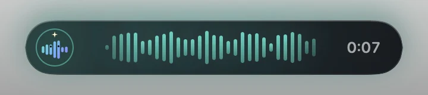
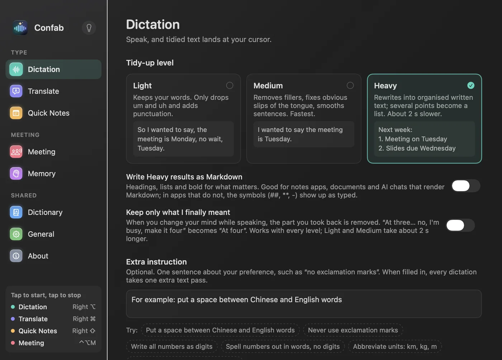

右Right ⌥
听写Dictation
说完，整理好的文字落在光标处。Speak; tidied text lands at your cursor.
- 三档规整：轻、中、重Three tidy-up levels: light, medium, heavy
- “只留我最后的意思”：改口的部分不写“Keep only what I finally meant”: what you took back is left out
- 重度规整可以写成 MarkdownHeavy can write Markdown
- 停下后大约一秒，文字出现；重度规整再慢两秒左右Text arrives about a second after you stop; Heavy takes about two seconds more

